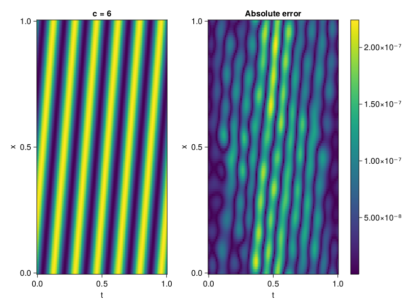

1D Convection Equation
Consider the following 1D-convection equation with periodic boundary conditions.
\[\begin{aligned} &\frac{\partial u}{\partial t}+c \frac{\partial u}{\partial x}=0, x \in[0,1], t \in[0,1] \\ &u(x, 0)=sin(2\pi x) \\ \end{aligned}\]
First we define the PDE.
using ModelingToolkit, Sophon, IntervalSets, CairoMakie
using Optimization, OptimizationOptimJL
@parameters x, t
@variables u(..)
Dₜ = Differential(t)
Dₓ = Differential(x)
c = 6
eq = Dₜ(u(x,t)) + c * Dₓ(u(x,t)) ~ 0
u_analytic(x,t) = sinpi(2*(x-c*t))
domains = [x ∈ 0..1, t ∈ 0..1]
bcs = [u(x,0) ~ u_analytic(x,0)]
@named convection = PDESystem(eq, bcs, domains, [x,t], [u(x,t)])\[ \begin{align} 6 \frac{\mathrm{d}}{\mathrm{d}x} u\left( x, t \right) + \frac{\mathrm{d}}{\mathrm{d}t} u\left( x, t \right) =& 0 \end{align} \]
Imposing periodic boundary conditions
We will use BACON to impose the boundary conditions. To this end, we simply set period to be one.
chain = BACON(2, 1, 8, 1; hidden_dims = 32, num_layers=4)MultiplicativeFilterNet(
filters = BranchLayer(
filter_1 = DiscreteFourierFeature(2 => 32), # 32 parameters, plus 64
filter_2 = DiscreteFourierFeature(2 => 32), # 32 parameters, plus 64
filter_3 = DiscreteFourierFeature(2 => 32), # 32 parameters, plus 64
filter_4 = DiscreteFourierFeature(2 => 32), # 32 parameters, plus 64
),
linear_layers = PairwiseFusion(
Base.Broadcast.BroadcastFunction{typeof(*)}(*)
layer_1 = Dense(32 => 32), # 1_056 parameters
layer_2 = Dense(32 => 32), # 1_056 parameters
layer_3 = Dense(32 => 32), # 1_056 parameters
),
output_layer = Dense(32 => 1), # 33 parameters
) # Total: 3_329 parameters,
# plus 256 states, summarysize 192 bytes.For demonstration purposes, the model is also periodic in time
sampler = QuasiRandomSampler(500, 100) # data points
strategy = NonAdaptiveTraining(1 , 500) # weights
pinn = PINN(chain)
prob = Sophon.discretize(convection, pinn, sampler, strategy)
@time res = Optimization.solve(prob, BFGS(); maxiters = 1000)u: ComponentVector{Float64}(filters = (filter_1 = (bias = [-0.5396979210601437; 0.35836572227691654; … ; 0.8114279029221285; 0.38879251405978915;;]), filter_2 = (bias = [1.11520511488012; 0.09569168080085315; … ; -0.2872421393371325; 0.861331407027044;;]), filter_3 = (bias = [-0.8922884377588657; 0.5348153087468077; … ; 0.1282765475981961; -0.5017110954211123;;]), filter_4 = (bias = [0.5180865251680952; -0.7059418215410507; … ; 0.9265209958763253; 0.005173735853150153;;])), linear_layers = (layer_1 = (weight = [0.21970901537437343 -0.3642063116286248 … 0.015729935287263856 -0.21333962458922515; -0.026353775553332986 0.16432900840980785 … 0.010070469386269128 0.3810388186823604; … ; 0.19253907261983616 -0.06628563477097749 … 0.27357520205782127 -0.0468242519252017; 0.16155490322358226 0.0492353301908494 … 0.24089468071114176 -0.46758625220437317], bias = [0.09987823392671481; -0.04206617122248935; … ; -0.0459966966758097; 0.09885750237832132;;]), layer_2 = (weight = [0.5787401375849012 -0.21734312385299848 … 0.3115229256042386 -0.3463121029872409; 0.1351512822498159 0.36673652922934513 … 0.1589167725892819 -0.42680623091886055; … ; 0.2231337490296823 -0.2111006603289 … -0.39467712191539195 0.5013138535266698; -0.3623931067583516 0.3317768808201979 … 0.18433436195914055 -0.2975645645215245], bias = [-0.04643701398613454; 0.006152838490326618; … ; 0.031419120386514114; 0.020784259376688343;;]), layer_3 = (weight = [-0.1735485155674487 0.09105746501306396 … -0.0748340394221152 -0.08151339263972426; -0.3567696335369015 -0.15419528257902101 … 0.36144478852986195 -0.2716628099497113; … ; -0.08354351721628257 -0.012097774373309392 … -0.291397318506406 0.10782643960685444; 0.081914862122727 -0.30628925167276855 … -0.4869364789904228 -0.2080510721375603], bias = [0.07874274431862326; -0.014257246958365145; … ; 0.018835387238015377; 0.1115365496527788;;])), output_layer = (weight = [-0.11914012609759421 -0.10262431698092472 … 0.00019227321983797556 -0.0023803640896927452], bias = [0.05953940147496772;;]))Let's visualize the result.
phi = pinn.phi
xs, ts= [infimum(d.domain):0.01:supremum(d.domain) for d in domains]
u_pred = [sum(phi([x,t],res.u)) for x in xs, t in ts]
u_real = u_analytic.(xs,ts')
fig, ax, hm = heatmap(ts, xs, u_pred', axis=(xlabel="t", ylabel="x", title="c = $c"))
ax2, hm2 = heatmap(fig[1,end+1], ts,xs, abs.(u_pred' .- u_real'), axis = (xlabel="t", ylabel="x", title="Absolute error"))
Colorbar(fig[:, end+1], hm2)
display(fig)
We can verify that our model is indeed, periodic.
xs, ts= [infimum(d.domain):0.01:supremum(d.domain)*2 for d in domains]
u_pred = [sum(phi([x,t],res.u)) for x in xs, t in ts]
fig, ax, hm = heatmap(ts, xs, u_pred', axis=(xlabel="t", ylabel="x", title="c = $c"))
display(fig)